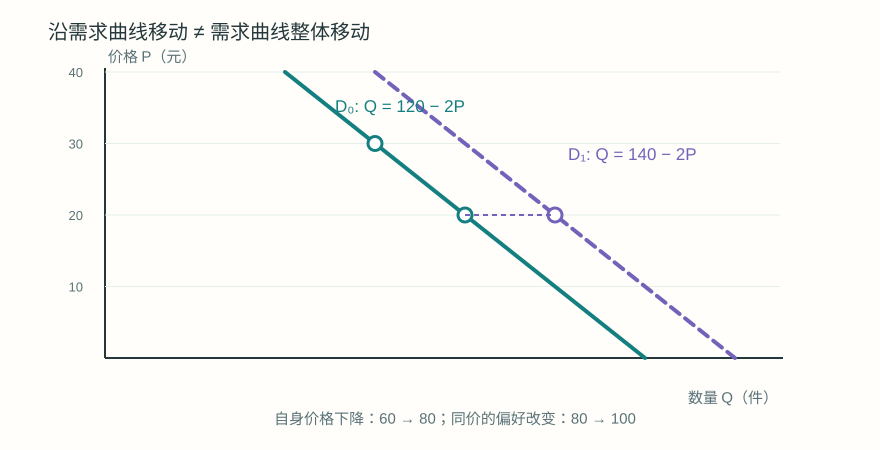
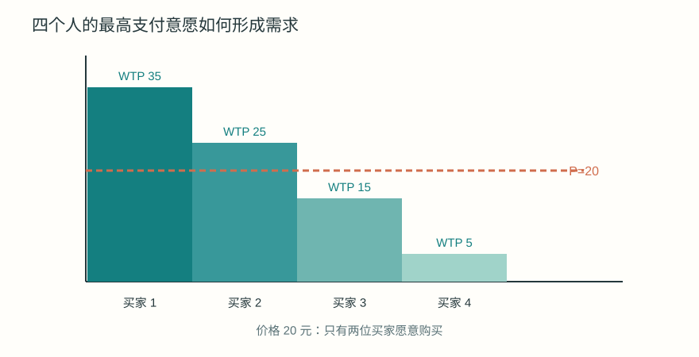

CHAPTER 03 · MICROECONOMICS
需求曲线：支付意愿与需求定律
一个价格变化，和一条曲线的移动，看似相似，却有不同的因果解释。
两种看起来都叫“需求增加”的现象
咖啡店把价格从 30 元降到 20 元，顾客愿意购买更多咖啡；同一时间，如果附近搬来新的办公楼，顾客数量可能在价格不变时增加。两件事都可能让销量增加，却对应两种完全不同的经济学变化。
需求量是给定价格下愿意且能够购买的数量；需求曲线是其他条件不变时，所有不同价格及其需求量组成的关系。商品自身价格变化，在同一条曲线上换一个点；收入、偏好、买家人数和相关商品价格等因素变化，才可能使整条曲线移动。
用一条可以核算的曲线说明需求定律
假设价格 P 的单位是元、市场数量 Q 的单位是件，需求 Qd=120−2P。P=30 时 Qd=60；P=20 时 Qd=80。这里自身价格下降导致需求量增加，符合需求定律的标准情形。线性函数只是局部近似，必须限定其适用的非负数量区间。

| 价格 P（元） | 原需求 Qd（件） | 偏好变化后需求 Qd（件） |
|---|---|---|
| 10 | 100 | 120 |
| 20 | 80 | 100 |
| 30 | 60 | 80 |
从个人最高支付意愿聚合为市场需求
设四名消费者每人最多购买一件商品，他们的最高支付意愿分别是 35、25、15、5 元。当价格为 20 元时，有两位愿意购买；如果价格为 10 元，就有三位愿意购买。把各个人在同一价格下的购买数量加在一起，即形成市场需求量。这是横向加总，不是简单把所有人的最高愿付价格相加。

阶梯需求图与上一节的线性 Qd 模型是两个独立的教学例子，不能把四名消费者的数据当成线性函数的原始样本。一个说明微观聚合机制，一个说明连续市场的解析求解。
怎么判断价格变化还是整条曲线移动？
假如咖啡价格上涨，购买者改喝茶，这通常表现为沿原咖啡需求曲线移动；若茶本身涨价，在咖啡价格不变时更多人改买咖啡，咖啡需求曲线可能右移。收入、预期、市场人数和偏好也可能让需求曲线整体移动。
正常品的需求通常随消费者收入上升而增加，劣等品则可能随收入上升而减少。“劣等”描述收入响应，不代表质量差。自身价格变化还包含替代效应与购买力变化带来的收入效应；在特殊的吉芬商品情形下，收入效应足以压倒替代效应，需求曲线可能局部向上倾斜。不能把“涨价以后销量上升”直接认定为吉芬商品，除非排除了预期、偏好等其他变化。
将需求冲击带到市场的另一端
交互实验：价格与市场出清
示意函数：需求 Qd = 120 + ΔD − 2P，供给 Qs = 20 + ΔS + 3P。滑块只改变教学假设，不代表实时市场报价。
均衡价格20，均衡数量80。
无 JavaScript 时仍可使用上面的静态图、函数和表格。
需求从 Qd=120−2P 右移20件，供给保持 Qs=20+3P。新均衡是多少？
展开解析
列式 140−2P=20+3P，因此 P*=24，Q*=92。原均衡 P*=20、Q*=80，均衡价格和数量都提高。
市场并非只有买家。下一章从卖家的额外生产成本入手，建立供给曲线。
来源与数值说明
示例参数、表格、交点及 SVG 皆由本项目独立构造并核算，并非现实市场数据，也没有直接复制参考书的插图。概念参考：